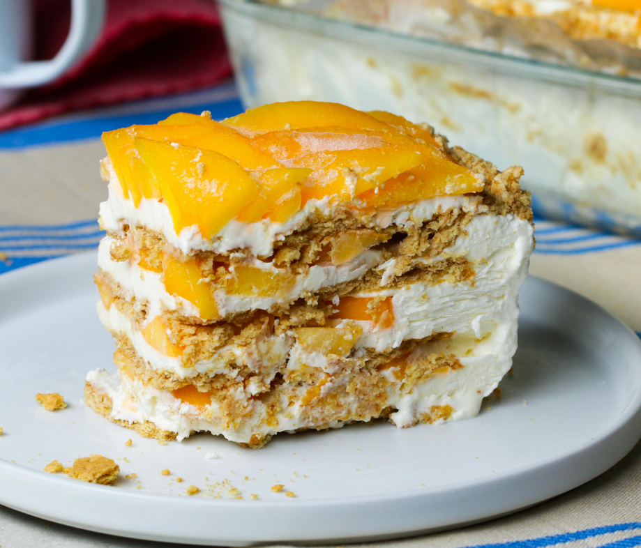

Mango Float

You'll want the ripest and juiciest mangoes to really do justice to this popular Filipino dessert. Made of layered whipped sweetened cream, graham cracker crumbs and fruit that's chilled overnight (think icebox cake), it's an easy no-bake dessert you can learn by heart.
Ingredients
- 2 cups heavy cream
- One 14-ounce can sweetened condensed milk
- 1/2 teaspoon pure vanilla extract
- 1 1/2 cups graham cracker crumbs (from a 9-ounce package)
- 3 ripe mangoes, diced
Steps in preparing a Mango Float
- Combine the cream, sweetened condensed milk and vanilla extract in a large bowl. Beat with a hand mixer until double in volume, about 4 minutes.
- Spread a scant 2 cups of cream in an 8-inch square baking dish, followed by 1/2 cup graham cracker crumbs and a third of the mangoes. Continue alternating layers for a total of 9 layers, ending with mango. Chill at least 8 hours and up to overnight.